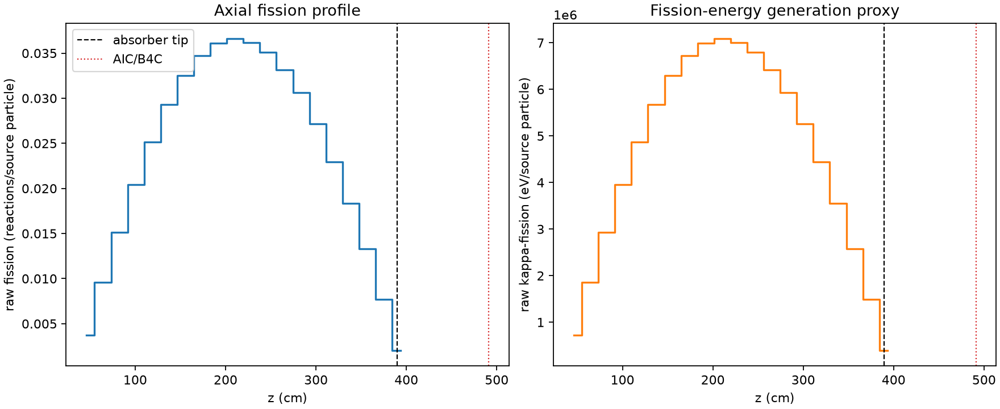
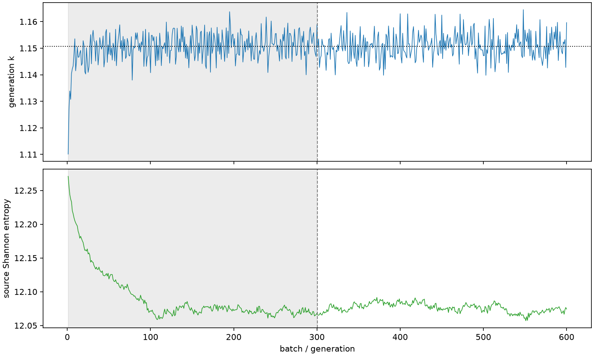

| field | value |
|---|---|
| experiment | V2-STAGE_256_OGRENCI_03-0018 |
| k | 1.150665055640446 |
| MC standard error | 0.00017626956093694856 |
| seconds | 981.594514173994 |
| acceptance | not_assessed |
| convergence | review_required |
Completed is output integrity only; physical and statistical review required. Zero tallies do not prove zero production or zero uncertainty.
| diagnostic | value |
|---|---|
| geometric fuel voxels | 5280 |
| zero fission tally voxels | 0 |
| low signal fuel voxels | 0 |
| low signal fission share | 0.0 |
| low signal kappa share | 0.0 |
| important fission share | 0.9500088548416292 |
| previous filter included | 5280 |
| duration estimate s | 1562.5173488400023 |
| actual minus estimate s | -580.9228346660084 |
| fission relative MC error | statistics |
|---|---|
| all_geometric_fuel | {"voxels": 5280, "positive_mean_voxels": 5280, "zero_mean_voxels": 0, "undefined_relative_error_voxels": 0, "median": 0.009852096633842627, "p95": 0.03014386134389813, "maximum": 0.040932925490088395} |
| low_signal | {"voxels": 0, "positive_mean_voxels": 0, "zero_mean_voxels": 0, "undefined_relative_error_voxels": 0, "median": null, "p95": null, "maximum": null} |
| important_95pct | {"voxels": 4216, "positive_mean_voxels": 4216, "zero_mean_voxels": 0, "undefined_relative_error_voxels": 0, "median": 0.00923545956665187, "p95": 0.013374608712578723, "maximum": 0.01717717105992355} |
| outside_previous_filter | {"voxels": 0, "positive_mean_voxels": 0, "zero_mean_voxels": 0, "undefined_relative_error_voxels": 0, "median": null, "p95": null, "maximum": null} |
| kappa_fission relative MC error | statistics |
|---|---|
| all_geometric_fuel | {"voxels": 5280, "positive_mean_voxels": 5280, "zero_mean_voxels": 0, "undefined_relative_error_voxels": 0, "median": 0.009840946902451662, "p95": 0.030107170506467502, "maximum": 0.04088654260026879} |
| low_signal | {"voxels": 0, "positive_mean_voxels": 0, "zero_mean_voxels": 0, "undefined_relative_error_voxels": 0, "median": null, "p95": null, "maximum": null} |
| important_95pct | {"voxels": 4216, "positive_mean_voxels": 4216, "zero_mean_voxels": 0, "undefined_relative_error_voxels": 0, "median": 0.009224844543006922, "p95": 0.013359074432627642, "maximum": 0.017157082976229133} |
| outside_previous_filter | {"voxels": 0, "positive_mean_voxels": 0, "zero_mean_voxels": 0, "undefined_relative_error_voxels": 0, "median": null, "p95": null, "maximum": null} |
| axial bin | fission share | kappa-fission share |
|---|---|---|
| 1 | 0.007984879581226439 | 0.007985329219748455 |
| 2 | 0.02042790127282692 | 0.020427869012296082 |
| 3 | 0.03218212983925482 | 0.03218194267029498 |
| 4 | 0.043405675988164014 | 0.043405627416788675 |
| 5 | 0.05355140074011198 | 0.05355143374356712 |
| 6 | 0.06234302474880776 | 0.06234291886581848 |
| 7 | 0.06917940632008748 | 0.06917930727970854 |
| 8 | 0.07391677835199527 | 0.07391643852541101 |
| 9 | 0.076911796344842 | 0.076911674474111 |
| 10 | 0.07786153289261974 | 0.07786162563207433 |
| 11 | 0.07702907166829491 | 0.0770289557701781 |
| 12 | 0.07464652989502021 | 0.0746462457292708 |
| 13 | 0.07057283429097522 | 0.07057294497392179 |
| 14 | 0.06512069394671176 | 0.06512059401781486 |
| 15 | 0.057865161657972605 | 0.05786529057540688 |
| 16 | 0.048836490774105235 | 0.04883647764459042 |
| 17 | 0.03907440819697099 | 0.039074247884337575 |
| 18 | 0.028310504811359334 | 0.028310378701985748 |
| 19 | 0.01644607747972044 | 0.016446129923150043 |
| 20 | 0.004333701198932996 | 0.00433456793952506 |
Histories include the inactive-to-active transition at batch 300. kappa-fission approximates fission energy production, not total heat deposition.

